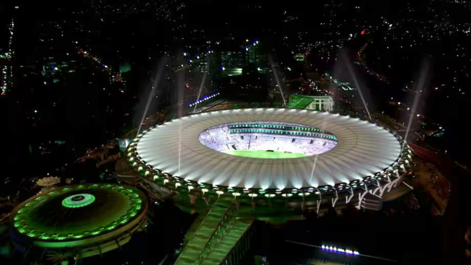
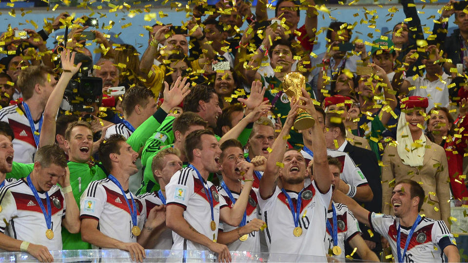

O mundo vivia um período de recuperação gradual da crise financeira global de 2008 quando a copa de 2014 foi realizada. A economia internacional apresentava sinais de crescimento, embora persistissem desafios em diversas regiões, especialmente na Europa. Ao mesmo tempo, a globalização seguia aprofundando a integração econômica entre os países, enquanto as redes sociais, os smartphones e as tecnologias digitais transformavam a comunicação, o consumo de informação e a interação entre as pessoas em escala mundial.
O Brasil, país-sede do torneio, era governado pela presidente Dilma Rousseff e ocupava posição de destaque entre as economias emergentes. Com aproximadamente 202 milhões de habitantes e um PIB em torno de US$ 2,4 trilhões, o país figurava entre as maiores economias do mundo e era visto como uma das principais lideranças da América Latina. No entanto, enfrentava desafios relacionados à desaceleração econômica, à qualidade dos serviços públicos, à corrupção e às desigualdades sociais.
O contexto político nacional foi marcado pelas manifestações populares iniciadas em 2013, que questionavam gastos públicos, qualidade dos serviços de saúde, educação, transporte e os elevados investimentos realizados para sediar grandes eventos esportivos. Dessa forma, a Copa ocorreu em meio a debates sobre prioridades de investimento e legado para a população.


A realização do torneio exigiu investimentos estimados em mais de US$ 11 bilhões. Os recursos foram destinados à construção e reforma de estádios, modernização de aeroportos, ampliação de sistemas de mobilidade urbana, melhorias em telecomunicações e reforço da segurança pública. Algumas obras de infraestrutura foram concluídas a tempo do evento, enquanto outras permaneceram inacabadas ou foram entregues posteriormente.
O legado da Copa de 2014 continua sendo objeto de debate. Entre os aspectos positivos destacam-se a modernização de aeroportos, melhorias em mobilidade urbana em algumas cidades e a ampliação da visibilidade internacional do Brasil. Por outro lado, diversos estádios apresentaram baixa utilização após o torneio, tornando-se exemplos frequentemente citados de investimentos com retorno limitado para a população.
De forma geral, a Copa de 2014 evidenciou os desafios enfrentados por países emergentes na organização de megaeventos esportivos. O torneio reforçou a projeção internacional do Brasil, mas também revelou tensões sociais, econômicas e políticas que se tornariam ainda mais evidentes nos anos seguintes.
A final foi disputada no Estádio do Maracanã, no Rio de Janeiro, diante de aproximadamente 74 mil espectadores. A seleção da Alemanha conquistou seu quarto título mundial ao derrotar a Argentina por 1 a 0 na prorrogação, com gol de Mario Götze.